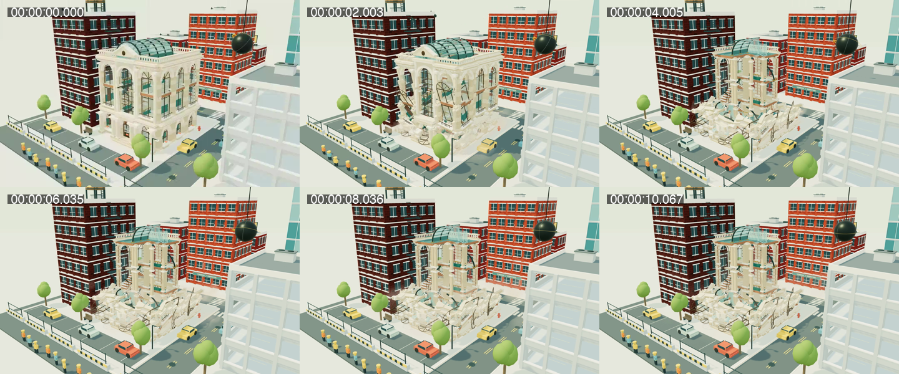

Matched native charge actions at ordinary building scale. Select an intervention, then play the two real-time recordings.
Retained banking-hall checkpoint
Bank as a world · review candidate
Canvas recordings omit the controls. Matching screen captures and input records preserve them. Play both starts the clips together; it does not certify frame synchronization or capture continuity.
Rewind, replay, a different future, rebuild
Roof, then upper gallery
Timestamped progression

Read REVIEW.md for references, exact inputs, verification and limitations.